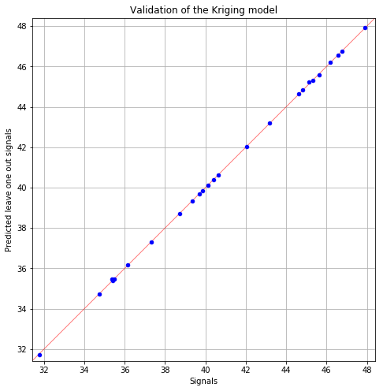
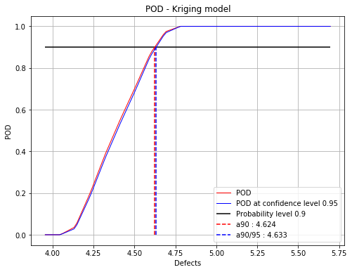
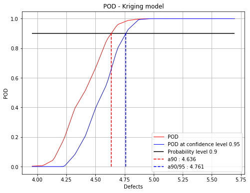
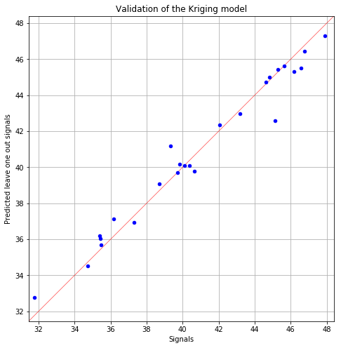

Kriging POD¶
[1]:
# import relevant module
import openturns as ot
import otpod
# enable display figure in notebook
try:
%matplotlib inline
except:
pass
/calcul/home/dumas/anaconda/lib/python3.6/site-packages/sklearn/ensemble/weight_boosting.py:29: DeprecationWarning: numpy.core.umath_tests is an internal NumPy module and should not be imported. It will be removed in a future NumPy release.
from numpy.core.umath_tests import inner1d
Generate data¶
[2]:
inputSample = ot.Sample(
[[4.59626812e+00, 7.46143339e-02, 1.02231538e+00, 8.60042277e+01],
[4.14315790e+00, 4.20801346e-02, 1.05874908e+00, 2.65757364e+01],
[4.76735111e+00, 3.72414824e-02, 1.05730385e+00, 5.76058433e+01],
[4.82811977e+00, 2.49997658e-02, 1.06954641e+00, 2.54461380e+01],
[4.48961094e+00, 3.74562922e-02, 1.04943946e+00, 6.19483646e+00],
[5.05605334e+00, 4.87599783e-02, 1.06520409e+00, 3.39024904e+00],
[5.69679328e+00, 7.74915877e-02, 1.04099514e+00, 6.50990466e+01],
[5.10193991e+00, 4.35520544e-02, 1.02502536e+00, 5.51492592e+01],
[4.04791970e+00, 2.38565932e-02, 1.01906882e+00, 2.07875350e+01],
[4.66238956e+00, 5.49901237e-02, 1.02427200e+00, 1.45661275e+01],
[4.86634219e+00, 6.04693570e-02, 1.08199374e+00, 1.05104730e+00],
[4.13519347e+00, 4.45225831e-02, 1.01900124e+00, 5.10117047e+01],
[4.92541940e+00, 7.87692335e-02, 9.91868726e-01, 8.32302238e+01],
[4.70722074e+00, 6.51799251e-02, 1.10608515e+00, 3.30181002e+01],
[4.29040932e+00, 1.75426222e-02, 9.75678838e-01, 2.28186756e+01],
[4.89291400e+00, 2.34997929e-02, 1.07669835e+00, 5.38926138e+01],
[4.44653744e+00, 7.63175936e-02, 1.06979154e+00, 5.19109415e+01],
[3.99977452e+00, 5.80430585e-02, 1.01850716e+00, 7.61988190e+01],
[3.95491570e+00, 1.09302814e-02, 1.03687664e+00, 6.09981789e+01],
[5.16424368e+00, 2.69026464e-02, 1.06673711e+00, 2.88708887e+01],
[5.30491620e+00, 4.53802273e-02, 1.06254792e+00, 3.03856837e+01],
[4.92809155e+00, 1.20616369e-02, 1.00700410e+00, 7.02512744e+00],
[4.68373805e+00, 6.26028935e-02, 1.05152117e+00, 4.81271603e+01],
[5.32381954e+00, 4.33013582e-02, 9.90522007e-01, 6.56015973e+01],
[4.35455857e+00, 1.23814619e-02, 1.01810539e+00, 1.10769534e+01]])
signals = ot.Sample(
[[ 37.305445], [ 35.466919], [ 43.187991], [ 45.305165], [ 40.121222], [ 44.609524],
[ 45.14552 ], [ 44.80595 ], [ 35.414039], [ 39.851778], [ 42.046049], [ 34.73469 ],
[ 39.339349], [ 40.384559], [ 38.718623], [ 46.189709], [ 36.155737], [ 31.768369],
[ 35.384313], [ 47.914584], [ 46.758537], [ 46.564428], [ 39.698493], [ 45.636588],
[ 40.643948]])
Build POD with Kriging model¶
[3]:
# signal detection threshold
detection = 38.
# The POD with censored data actually builds a POD only on filtered data.
# A warning is diplayed in this case.
POD = otpod.KrigingPOD(inputSample, signals, detection,
noiseThres=35., saturationThres=45.)
INFO:root:Censored data are not taken into account : the kriging model is only built on filtered data.
User-defined defect sizes¶
The user-defined defect sizes must range between the minimum and maximum of the defect values after filtering. An error is raised if it is not the case. The available range is then returned to the user.
[4]:
# Default defect sizes
print('Default defect sizes : ')
print(POD.getDefectSizes())
# Wrong range
try:
POD.setDefectSizes([3.2, 3.6, 4.5, 5.5])
except ValueError as e:
print('Range of the defect sizes is too large, it returns a value error : ')
print(e)
Default defect sizes :
[3.9549157 4.0152854 4.07565509 4.13602479 4.19639448 4.25676418
4.31713387 4.37750357 4.43787326 4.49824296 4.55861265 4.61898235
4.67935204 4.73972174 4.80009143 4.86046113 4.92083082 4.98120052
5.04157021 5.10193991]
Range of the defect sizes is too large, it returns a value error :
Defect sizes must range between 3.9550 and 5.1019.
[5]:
# Good range
POD.setDefectSizes([4., 4.3, 4.6, 4.9, 5.1])
print('User-defined defect size : ')
print(POD.getDefectSizes())
User-defined defect size :
[4. 4.3 4.6 4.9 5.1]
Running the Kriging based POD¶
The computing time can be reduced by setting the simulation size attribute to another value. However the confidence interval is less accurate.
The sampling size is the number of the samples used to compute the POD with the Monte Carlo simulation for each defect sizes.
A progress is displayed, which can be disabled with the method setVerbose.
[6]:
POD = otpod.KrigingPOD(inputSample, signals, detection)
# we can change the number of initial random search for the best starting point
# of the TNC algorithm which optimizes the covariance model parameters
POD.setInitialStartSize(50) # default is 100
# we can change the sample size of the Monte Carlo simulation
POD.setSamplingSize(2000) # default is 5000
# we can also change the size of the simulation to compute the confidence interval
POD.setSimulationSize(500) # default is 1000
POD.run()
Start optimizing covariance model parameters...
Kriging optimizer completed
kriging validation Q2 (>0.9): 1.0000
Computing POD per defect: [==================================================] 100.00% Done
Compute detection size¶
[7]:
# Detection size at probability level 0.9
# and confidence level 0.95
print(POD.computeDetectionSize(0.9, 0.95))
# probability level 0.95 with confidence level 0.99
print(POD.computeDetectionSize(0.95, 0.99))
[a90 : 4.62381, a90/95 : 4.6325]
[a95 : 4.66746, a95/99 : 4.67602]
get POD Function¶
[8]:
# get the POD model
PODmodel = POD.getPODModel()
# get the POD model at the given confidence level
PODmodelCl95 = POD.getPODCLModel(0.95)
# compute the probability of detection for a given defect value
print('POD : {:0.3f}'.format(PODmodel([4.2])[0]))
print('POD at level 0.95 : {:0.3f}'.format(PODmodelCl95([4.2])[0]))
POD : 0.148
POD at level 0.95 : 0.135
Compute the Q2¶
Enable to check the quality of the model.
[9]:
print('Q2 : {:0.4f}'.format(POD.getQ2()))
Q2 : 1.0000
Draw the validation graph¶
The predictions are the one computed by leave one out.
[10]:
fig, ax = POD.drawValidationGraph()
fig.show()
/calcul/home/dumas/anaconda/lib/python3.6/site-packages/matplotlib/figure.py:459: UserWarning: matplotlib is currently using a non-GUI backend, so cannot show the figure
"matplotlib is currently using a non-GUI backend, "

Show POD graphs¶
Mean POD and POD at confidence level with the detection size for a given probability level¶
[11]:
fig, ax = POD.drawPOD(probabilityLevel=0.9, confidenceLevel=0.95,
name='figure/PODKriging.png')
# The figure is saved in PODPolyChaos.png
fig.show()
/calcul/home/dumas/anaconda/lib/python3.6/site-packages/matplotlib/figure.py:459: UserWarning: matplotlib is currently using a non-GUI backend, so cannot show the figure
"matplotlib is currently using a non-GUI backend, "

Advanced user mode¶
The user can defined one or both parameters of the kriging algorithm : - the basis - the covariance model
The user can also defined the input parameter distribution it is known.
The user can set the KrigingResult object if it built from other data.
[12]:
# new POD study
PODnew = otpod.KrigingPOD(inputSample, signals, detection)
[13]:
# set the basis constant
basis = ot.ConstantBasisFactory(4).build()
PODnew.setBasis(basis)
[14]:
# set the covariance Model as an absolute exponential model
covColl = ot.CovarianceModelCollection(4)
for i in range(4):
covColl[i] = ot.AbsoluteExponential([1], [1.])
covarianceModel = ot.ProductCovarianceModel(covColl)
PODnew.setCovarianceModel(covarianceModel)
[15]:
PODnew.run()
Start optimizing covariance model parameters...
Kriging optimizer completed
kriging validation Q2 (>0.9): 0.9660
Computing POD per defect: [==================================================] 100.00% Done
[16]:
print(PODnew.computeDetectionSize(0.9, 0.95))
print('Q2 : {:0.4f}'.format(POD.getQ2()))
[a90 : 4.63562, a90/95 : 4.76128]
Q2 : 1.0000
[17]:
fig, ax = PODnew.drawPOD(probabilityLevel=0.9, confidenceLevel=0.95)
fig.show()
/calcul/home/dumas/anaconda/lib/python3.6/site-packages/matplotlib/figure.py:459: UserWarning: matplotlib is currently using a non-GUI backend, so cannot show the figure
"matplotlib is currently using a non-GUI backend, "

[18]:
fig, ax = PODnew.drawValidationGraph()
fig.show()
/calcul/home/dumas/anaconda/lib/python3.6/site-packages/matplotlib/figure.py:459: UserWarning: matplotlib is currently using a non-GUI backend, so cannot show the figure
"matplotlib is currently using a non-GUI backend, "

[ ]: